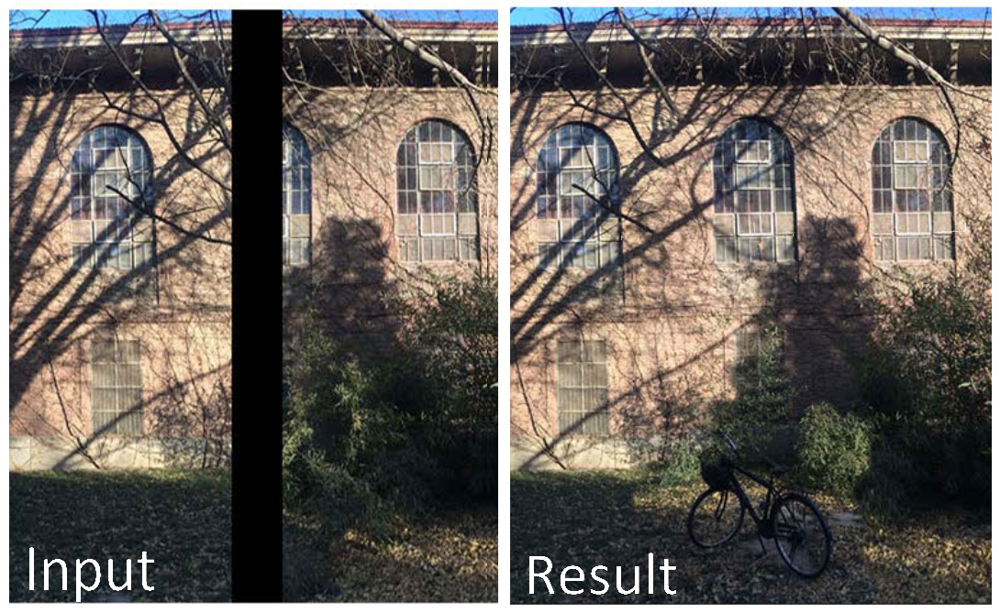

Deep 360° Optical Flow Estimation Based on Multi-Projection Fusion
Yiheng Li, Connelly Barnes, Kun Huang, Fang-Lue Zhang
European Conference on Computer Vision (ECCV), 2022
|
|||||||||||||||
After earning my doctoral degree working on structure-based image analysis and editing at the Visual Media Lab at Tsinghua in 2015, I continued working as a Post-Doctoral researcher and collaborating on research projects with industry, where my research focus was mainly on the intelligent image and video editing and enhancement. In 2017, I joined the Victoria Graphics Group as a lecturer.
My current research interests include deep learning based image/video manipulation approaches and panoramic 360 image processing for Virtual Reality applications. I am also working on a SfTI Robotics Spearhead project, where I focus on providing efficient deep learning method for RGB-D object recognition and segmentation. PhD and masters positions are available for doing research in the above fields. Please email me for more details.
I have been actively contributing to computer graphics and image processing community, with my work being published in the highest quality journals and conferences, including SIGGRAPH/SIGGRAPH Asia, AAAI, IEEE Transactions on Visualization and Computer Graphics, IEEE Transactions on Multimedia, and IEEE Transactions on Image Processing. My work on deep learning based image completion, repeated structure and shape analysis, library-driven editing, and aesthetic-based composition adjustment are all state-of-the-art tools on image and video editing tasks. I received the Victoria Early-Career Research Excellence Award in 2019 and Marsden Fast-Start Grant in 2020. I have served as program chair of Pacific Graphics 2020 and 2021.
Selected Publications
Motif-GCNs with Local and Non-Local Temporal Blocks for Skeleton-Based Action Recognition Yu-Hui Wen, Lin Gao, Hongbo Fu, Fang-Lue Zhang, Shihong Xia, Yong-Jin Liu IEEE Transactions on Pattern Analysis and Machine Intelligence (TPAMI), Online Published, 2022
|
|
Deep 360° Optical Flow Estimation Based on Multi-Projection Fusion Yiheng Li, Connelly Barnes, Kun Huang, Fang-Lue Zhang European Conference on Computer Vision (ECCV), 2022
|
Casual 6-DoF: free-viewpoint panorama using a handheld 360° camera Rongsen Chen, Fang-Lue Zhang, Simon Finnie, Andrew Chalmers, Taehyun Rhee IEEE Transactions on Visualization and Computer Graphics (TVCG), Online Published, 2022
|
 |
IMU-Assisted Online Video Background Identification Jianxiang Rong, Lei Zhang, Hua Huang, Fang-Lue Zhang IEEE Transactions on Image Processing (TIP), 31, pp. 4336-4351, 2022
|
 |
Reference-based deep line art video colorization Min Shi, Jia-Qi Zhang, Shu-Yu Chen, Lin Gao, Yukun Lai, Fang-Lue Zhang IEEE Transactions on Visualization and Computer Graphics (TVCG), Online Published, 2022
|
Rendering-Aware HDR Environment Map Prediction From A Single Image Jun-Peng Xu, Chen-Yu Zuo, Fang-Lue Zhang, Miao Wang Proceedings of the AAAI Conference on Artificial Intelligence (AAAI), 36(3), pp. 2857-2865, 2022
|
 |
Bullet Comments for 360° Video Yi-Jun Li, Jinchuan Shi, Fang-Lue Zhang, Miao Wang 2022 IEEE Conference on Virtual Reality and 3D User Interfaces (IEEE VR), pp. 1-10, 2022
|
Optimal Pose Guided Redirected Walking with Pose Score Precomputation Sen-Zhe Xu, Tian Lv, Guangrong He, Chia-Hao Chen, Fang-Lue Zhang, Song-Hai Zhang 2022 IEEE Conference on Virtual Reality and 3D User Interfaces (IEEE VR), pp. 655-663, 2022
|
Active colorization for cartoon line drawings Shu-Yu Chen, Jia-Qi Zhang, Lin Gao, Yue He, Shihong Xia, Min Shi, Fang-Lue Zhang IE Transactions on Visualization and Computer Graphics (IEEE TVCG), 22(7), pp. 1198-1208, 2022
|
 |
Content-Preserving Image Stitching With Piecewise Rectangular Boundary Constraints Yun Zhang, Yu-Kun Lai, Fang-Lue Zhang IEEE Transactions on Visualization and Computer Graphics (IEEE TVCG), 27(7), pp.3198-3212, 2021
|
 |
Deep portrait image completion and extrapolation Xian Wu, Rui-Long Li, Fang-Lue Zhang, Jian-Cheng Liu, Jue Wang, Ariel Shamir, Shi-Min Hu IEEE Transactions on Image Processing (IEEE TIP), pp. 2344-2355, 2020
|
Graph CNNs with Motif and Variable Temporal Block for Skeleton-based Action Recognition Xian Wu, Rui-Long Li, Fang-Lue Zhang, Jian-Cheng Liu, Jue Wang, Ariel Shamir, Shi-Min Hu Proceedings of the AAAI Conference on Artificial Intelligence (AAAI), 33(01), 8989-8996, 2019
|
 |
Detecting and removing visual distractors for video aesthetic enhancement Fang-Lue Zhang, Xian Wu, Rui-Long Li, Jue Wang, Zhao-Heng Zheng, Shi-Min Hu IEEE Transactions on Multimedia (IEEE TMM), vol. 20, no. 8, pp. 1987-1999, 2018
|
Robust Background Identification for Dynamic Video Editing Fang-Lue Zhang, Xian Wu, Jue Wang, Hao-Tian Zhang, Shi-Min Hu* ACM SIGGRAPH Asia 2016
|
 |
A Survey of the State-of-the-art in Patch-based Synthesis Connelly Barnes and Fang-Lue Zhang Journal of Computational Visual Media, 2017
|
 |
PlenoPatch: Patch-based Plenoptic Image Manipulation Fang-Lue Zhang, Jue Wang, Eli Shechtman, Zi-Ye Zhou, Jia-Xin Shi, Shi-Min Hu* IEEE Transactions on Visualization and Computer Graphics (TVCG), 2017
|
Simultaneous Camera Path Optimization and Distraction Removal for Improving Amateur Video Fang-Lue Zhang, Jue Wang, Han Zhao, Ralph R. Martin, Shi-Min Hu* IEEE Transactions on Image Processing (TIP),2015, Vol.24, No.12, 5982 - 5994.
|
|  | PatchTable: Efficient Patch Queries for Large Datasets and Applications Connelly Barnes , Fang-Lue Zhang , Liming Lou, Xian Wu, Shi-Min Hu ACM SIGGRAPH 2015
[Project Page][Large PDF][Compressed PDF][BibTex]
|
PatchNet: A Patch-based Image Representation for Interactive Library-driven Image Editing Shi-Min Hu*, Fang-Lue Zhang, Miao Wang, Ralph R. Martin and Jue Wang ACM SIGGRAPH Asia 2013
[Project Page][Large PDF][Compressed PDF][Video]
|
Aesthetic Image Enhancement by Dependence-Aware Object Recomposition Fang-Lue Zhang, Miao Wang, Shi-Min Hu* IEEE Transactions on Multimedia (TMM), 2013, 15(7).
|
ImageAdmixture: Putting Together Dissimilar Objects from Groups Fang-Lue Zhang, Ming-Ming Cheng, Jiaya Jia, Shi-Min Hu* IEEE Transactions on Visualization and Computer Graphics (TVCG), 2012, 18(11), 1849-1857.
|
 |
RepFinder: Finding Approximately Repeated Scene Elements for Image Editing. Ming-Ming Cheng, Fang-Lue Zhang, Niloy J. Mitra, Xiaolei Huang, Shi-Min Hu*. ACM Transactions on Graphics (Proceedings of SIGGRAPH 2010), 30(4): article 98.
|
Data-Driven Object Manipulation in Images Chen Goldberg, Tao Chen, Fang-Lue Zhang, Ariel Shamir, Shi-Min Hu* Eurographics 2012
|
*Shi-Min Hu is my PhD supervisor.
Collaborators
Jiaya Jia
Ming-Ming Cheng
Miao Wang
Tao Chen
Chen Goldberg
Yun Zhang
Neil Dodgson
Taehyun Rhee
Academic Services
Program Chair, Pacific Graphics 2020 and 2021
Reviewer, SIGGRAPH 2014-2022, SIGGRAPH Asia 2013-2022, EuroGraphics 2014, Pacific Graphics 2013-2022
Reviewer, IEEE TVCG, TIP, TMM, CGF, the Visual Computer, The Journal of Computer Science and Technology
Awards
2020 - The "Best Reviewer Award" by Computational Visual Media.
2019 - The "Victoria Early-Career Researcher Award" by Victoria University of Wellington.
2012 - The "National Scholarship".
2011 - The "Excellent PHD Student Award" by IBM.
Notice: All the digital papers and videos in this page are the authors' version for personal and classroom use only.
Last updated by Fang-Lue Zhang, 2022 in Wellington